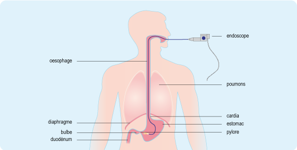

Bienvenue Sur Medical Education
L'endoscopie par voie haute : la fibroscopie œso-gastro duodenale
Definition
L'endoscopie par voie haute ou fibroscopie œso-gastro duodenale (FOGD) est un examen endoscopique qui permet d'explorer les visceres creux (œsophage, pylore, bulbe, duodenum) et eventuellement pratiquer des biopsies ou des scleroses grece a l'introduction d'un endoscope.

Indications
Diagnostics
Gastrites.
Cancers œso-gastro duodenaux.
Ulceres gastro-duodenaux.
Varices œsophagiennes.
Hemorragies digestives hautes.
Therapeutiques
Dilatation œsophagienne.
Pose de prothese œsophagienne.
Destruction des tumeurs inoperables.
Scleroses de varices œsophagiennes.
Ablation de polypes et de corps etrangers.
Surveillances
Post-operatoire.
Prevention par rapport aux maladies hereditaires.
Contre-indications
Insuffisance respiratoire grave.
Trouble du rythme cardiaque grave.
Trouble de l'hemostase grave.
Materiel
Fibroscope de taille adaptee : c'est un tube souple d'environ 1m20 et de 7 a 13mm de diametre. Une extremite comporte les manettes d'orientation de l'appareil et les manettes d'insufflation et d'aspiration, le canal a biopsie et l'optique. L'autre extremite comporte deux faisceaux de fibres (lumiere et image).
Necessaire au lavage.
Source de lumiere et appareil a insuffler de l'air.
Necessaire a l'aspiration.
Un cale dents (pour eviter les morsures de l'endoscope).
Linge pour proteger le patient des ecoulements de salives.
Suivant le cas :
Brosses pour nettoyage des canaux.
Anse diathermique (ablation de polype par electrocoagulation).
Flacons pour prelevements : examens.
Bougies de Savary et ballonnets pour dilatation de stenose.
Aiguilles pour scleroses et produit sclerosant.
Prevoir :
Chariot d'urgence.
Source d'oxygene.
Un scope.
Defibrillateur.
Oxymetre de pouls.
Preparation du patient
Preparation psychologique
Expliquer le but et le deroulement de l'examen
Expliquer les consignes et la preparation colique.
Si examen sans anesthesie generale, prevenir du caractere douloureux de l'examen, de l'evacuation de gaz lors de l'examen.
Rassurer le patient.
Preparation physique
Patient a jeun 8 heures avant l'examen.
Faire uriner avant l'examen.
Oter protheses dentaires, lunettes, lentilles.
Appliquer prescription medicale si besoin (anxiolytique).
Dossier complet :
E.C.G., radiographie pulmonaire.
Ionogramme, NFS, plaquette.
Groupe sanguin, rhesus, RAI.
Bilan de coagulation : TP, TCA.
Verifier les allergies aux anesthesiques.
Deroulement de l'examen
Installer le patient en decubitus lateral gauche.
Mettre protection sur le patient.
Pose d'une voie d'abord veineuse sur prescription medicale.
Anesthesie locale au fond de la gorge avec un spray de xylocaene (diminue reflexe nauseeux).
Le medecin lubrifie le fibroscope avec de la xylocaene gel.
Maintenir la tete en anteflexion.
Fibroscope introduit a travers la cale des dents.
Demander au patient de deglutir : progression du fibroscope jusqu'au duodenum (insufflation d'air pour deplisser les parois de l'estomac).
Si biopsie, introduire les differents instruments et effectuer les prelevements.
Complications et surveillances
Faire cracher si besoin.
Si anesthesie locale : a jeun pendant 30 minutes. Test de deglutition : faire boire de l'eau.
Si pas d'anesthesie : realimentation immediate possible.
Si polypectomie : a jeun pendant 12 heures. Alimentation lactee froide.
- Pneumopathie : surveillance de la respiration et de la temperature car risque d'hyperthermie.
- Perforation ou fissure de l'œsophage : emphyseme cutane cervicale (dilatation anormale pouvant aller jusqu'e des infiltrations d'air), signe sur le plan respiratoire, douleur abdominale.
- Hemorragie : hematemese, pouls (tachycardie), tension arterielle (hypotension), coloration des teguments.
- Nausee, toux reflexe, ballonnement transitoire.
Nettoyage et desinfection de l'endoscope
1ere etape : pre-traitement :
Immediate apres utilisation.
Essuyage de la partie externe de l'appareil et rineage a l'eau.
Aspiration des canaux et de la lumiere de l'endoscope : test d'etancheite.
Trempage, lavage, brossage de l'endoscope dans un detergent.
2e etape : rineage :
Rineage abondant a l'eau pour eliminer toutes traces de detergent.
3e etape : desinfection :
Ports de gants a usage unique propres ou steriles.
Trempage dans une solution de produit desinfectant pendant 20 min.
Irrigation des canaux et de la lumiere en eliminant les bulles d'air.
4e etape : rineage terminal :
Ports de gants.
Rineage abondant a l'eau sterile ou filtre.
Sechage a l'air medical.
Contrele de l'appareil (orifices, fonctionnement, optiques terminaux).
5e etape : le stockage :
A l'abri de la lumiere.
A l'abri de toutes sources de contamination microbienne.
Si stockage superieur a 12 heures, on refait une nouvelle desinfection.
Voir aussi :
L'appareil digestif
Examens medicaux : l'endoscopie
Module Gastro-enterologie